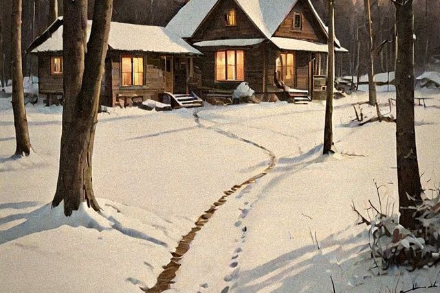

Chapter One · Skills 01–07Found in the Woodshed
Footprints, first pancakes and a proper introduction
- Reading Footprints in the Snow
- Leaving Out a Plate of Pancakes
- Making a Proper Introduction
- Choosing a Good Name
- Fixing Up the Woodshed as a Bedroom
- Explaining Things to the Neighbors
- Dealing With the Forest Ranger